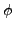
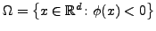
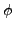
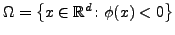

Poisson equation in arbitrary domain (possibly with moving boundary) is
central to many applications, such as diffusion phenomena,fluid dynamics,
charge transport in semiconductors, crystal growth, electromagnetism and
many others.
We present a rather simple iterative method [2] to
solve the Poisson equation in arbitrary domain  , identified by a
level set function  in such a way
, and mixed boundary conditions.
Such iterative scheme is just the building-block for a proper multigrid
approach [3].
, identified by a
level set function  in such a way
, and mixed boundary conditions.
Such iterative scheme is just the building-block for a proper multigrid
approach [3].
The method is based on ghost-cell technique for finite difference discretization on a regular Cartesian grid. The structure of ghost points is complex and elimination of discrete boundary conditions from the system is hard to perform. In addition, a simple Gauss-Seidel scheme for the whole system does not converge. Therefore, in order to provide a good smoother for the multigrid approach, we relax the whole problem introducing a fictitious time and looking for the steady-state solution. The iterations on the boundary are performed in order to provide smooth errors. The iterative scheme is proved to converge, at least for first order accurate discretization.
Multigrid techniques for ghost points are well-studied in literature,
especially in the case of rectangular domain, where the restriction of
the boundary is performed using a restriction operator of codimension
 , since ghost points are aligned with the Cartesian axis.
In the case of arbitrary domain, ghost points have an irregular structure
and we provide a reasonable definition of the restriction operator for
the boundary.
, since ghost points are aligned with the Cartesian axis.
In the case of arbitrary domain, ghost points have an irregular structure
and we provide a reasonable definition of the restriction operator for
the boundary.
We also show that a proper treatment of the boundary iterations can improve the rate of convergence of the multigrid and the cost of this extra computational work is negligible [1].
The method can also be extended to the interesting case of discontinuous coefficients across an interface. Some preliminary numerical results [4] are provided in this talk.